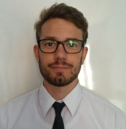

Marcos Silvera | WDD 130
I am Marcos Silvera from Uruguay. I love Uruguayan culture—especially sharing mate, one of our most cherished traditions. I work as a high school math teacher and enjoy studying programming in my free time. I dedicate part of my day to learning new programming languages and working on personal projects to improve my skills. I am passionate about discovering new technologies and exploring how they can be applied in education and real-world problem solving. Additionally, I belive that continuous learning is key to personal and professionak growth. I enjoy collaborating with others, sharing knowledge, and participating in projects that make a positive impact. My goal is ti combine my teaching experience with my technical skills to create innovative solutions that support learning and improve lives.